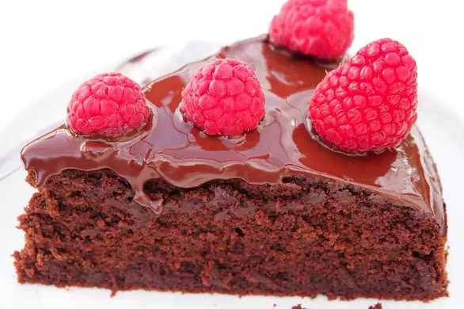

Vegan and Gluten-Free Chocolate Cake

It's hard finding a good chocolate cake that is vegan and gluten-free, but search no more!
If you like, you can garnish the ready cake with berries or other fresh fruit.
Ingredients:
- 1 1/2 cups teff flour
- 7 tablespoons rice flour
- 5 tablesppons arrowroot starch
- 2 1/2 tablespoons brown sugar
- 2 teaspoons instant coffee granules
- 1 teaspoon baking soda
- 1 pinch salt
- 9 ounces of dark chocolate, chopped
- 2 tablespoons of soy milk
- 1 tablespoon cider vinegar
Glaze:
- 2 ounces of dark chocolate, chopped, divided
- 1 teaspoon coconut oil (Optional)
Directions:
- Preheat the over to 350 degrees F (175 degrees C). Grease a 9-inche springform pan and line with parchment paper.
- Combine teff flour, rice flour, arrowroot, sugar, coffee, baking soda, and salt in a large bowl.
- Place chocolate and 2 tablespoons soul milk in top of a double boiler over simmering water. Stir frequently, scrapping down the sides with a rubber spatula to avoid scorching, until chocolate is melted, about 5 minutes. Add 2 cups of soy milk and stir until well combined. Add vinegar.
- Pour the chocolate mixture over the flour mixture and mix with a spatula until batter is well combined. Pour into the springform pan and level with a spatula
- Bake in the preheated over intul set but still slightly soft, about 35 minutes. Allow to cool for a few minutes in the pan, then remove and cool completely on a wire rack, about 45 minutes.
- Make the glaze while the cake is cooling. Place chocolate and coconut oul in top of a double boiler over simmering water. Stir frequently, scraping down the sides with a rubber spatula to avoid scorching, until chocolate over cake and spread evenly. Allow to set before slicing.